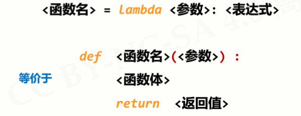
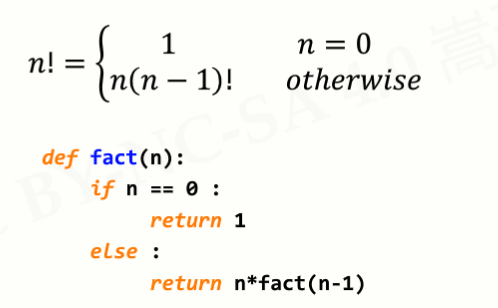
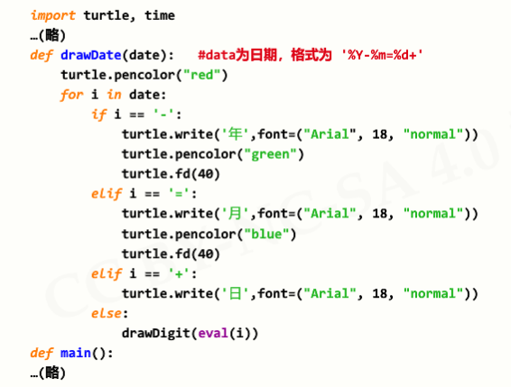

原文连接:https://www.cnblogs.com/wlrblog/p/PythonStudyFive.html
Python学习笔记（五）—— 函数和代码复用
一、函数
1、函数的定义：函数是一段代码的表示
2、函数的调用
3、函数的参数传递
3.1 参数个数
3.2 参数传递的两种方式：按照位置或名称方式传递
4、函数的返回值
5、局部变量和全局变量

例子：
5.1 局部变量和全局变量是不同变量
例子：
5.2 局部变量为组合数据类型且未创建，等同于全局变量
6、lambda 函数
6.1 lambda 函数概述
6.2 格式

6.3 例子
6.4 注意事项
二、函数递归
1、定义：函数定义中调用自身的方式
2、函数递归的调用过程
2.1 递归的实现：函数 + 分支语句
2.2 递归的调用过程图示

3、函数递归实例解析
3.1 字符串反转
3.2 斐波拉契数列
3.3 汉诺塔

三、函数应用场景
1、七段数码管绘制时间
1.1 绘制样式
1.2 基本思路
1.3 绘制单个数码管
代码：
print()1.4 获取一段数字，绘制多个数码管
代码:
1.5 获取当前系统时间，绘制对应的数码管
1.5.1 增加七段数码管之间的线条间隔
代码：
#绘制数码管间隔
def drawGap():
turtle.penup()
turtle.fd(5)1.5.2 获取当前时间
代码：
- def drawDate(date):
- turtle.pencolor("red")
- for i in date:
- if i == '-':
- turtle.write('年',font=("Arial", 18, "normal"))
- turtle.pencolor("green")
- turtle.fd(40)
- elif i == '=':
- turtle.write('月',font=("Arial", 18, "normal"))
- turtle.pencolor("blue")
- turtle.fd(40)
- elif i == '+':
- turtle.write('日',font=("Arial", 18, "normal"))
- else:
- drawDigit(eval(i))

1.6 七段数码管完整代码：
- #SevenDigitsDrawV2.py
- import turtle, time
- def drawGap(): #绘制数码管间隔
- turtle.penup()
- turtle.fd(5)
- def drawLine(draw): #绘制单段数码管
- drawGap()
- turtle.pendown() if draw else turtle.penup()
- turtle.fd(40)
- drawGap()
- turtle.right(90)
- def drawDigit(d): #根据数字绘制七段数码管
- drawLine(True) if d in [2,3,4,5,6,8,9] else drawLine(False)
- drawLine(True) if d in [0,1,3,4,5,6,7,8,9] else drawLine(False)
- drawLine(True) if d in [0,2,3,5,6,8,9] else drawLine(False)
- drawLine(True) if d in [0,2,6,8] else drawLine(False)
- turtle.left(90)
- drawLine(True) if d in [0,4,5,6,8,9] else drawLine(False)
- drawLine(True) if d in [0,2,3,5,6,7,8,9] else drawLine(False)
- drawLine(True) if d in [0,1,2,3,4,7,8,9] else drawLine(False)
- turtle.left(180)
- turtle.penup()
- turtle.fd(20)
- def drawDate(date):
- turtle.pencolor("red")
- for i in date:
- if i == '-':
- turtle.write('年',font=("Arial", 18, "normal"))
- turtle.pencolor("green")
- turtle.fd(40)
- elif i == '=':
- turtle.write('月',font=("Arial", 18, "normal"))
- turtle.pencolor("blue")
- turtle.fd(40)
- elif i == '+':
- turtle.write('日',font=("Arial", 18, "normal"))
- else:
- drawDigit(eval(i))
- def main():
- turtle.setup(800, 350, 200, 200)
- turtle.penup()
- turtle.fd(-350)
- turtle.pensize(5)
- # drawDate('2018-10=10+')
- drawDate(time.strftime('%Y-%m=%d+',time.gmtime()))
- turtle.hideturtle()
- turtle.done()
- main()
2、科赫雪花小包裹
2.1 问题描述
2.2 绘制n阶科赫曲线
代码：
- #KochDrawV1.py
- import turtle
- def koch(size, n):
- if n == 0:
- turtle.fd(size)
- else:
- for angle in [0, 60, -120, 60]:
- turtle.left(angle)
- koch(size/3, n-1)
- def main():
- turtle.setup(800,400)
- turtle.penup()
- turtle.goto(-300, -50)
- turtle.pendown()
- turtle.pensize(2)
- koch(600,3) # 0阶科赫曲线长度，阶数
- turtle.hideturtle()
- main()
2.3 科赫曲线到科赫雪花的绘制
代码：
import turtle
def koch(size, n):
if n == 0:
turtle.fd(size)
else:
for angle in [0, 60, -120, 60]:
turtle.left(angle)
koch(size/3, n-1)
def main():
turtle.setup(600,600)
turtle.penup()
turtle.goto(-200, 100)
turtle.pendown()
turtle.pensize(2)
level = 3 # 3阶科赫雪花，阶数
koch(400,level)
turtle.right(120)
koch(400,level)
turtle.right(120)
koch(400,level)
turtle.hideturtle()
main()
运行结果：